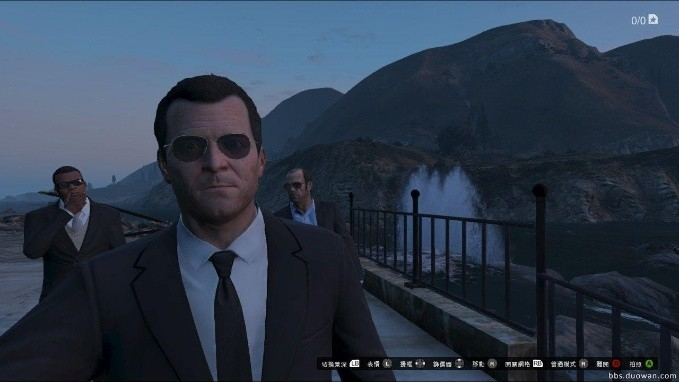
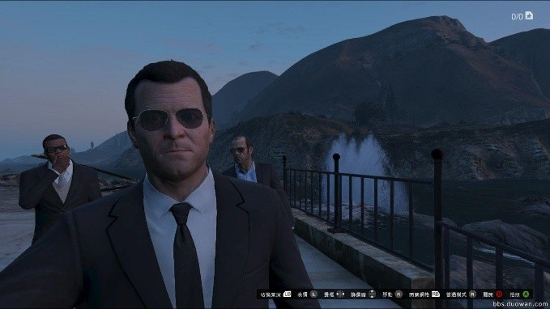
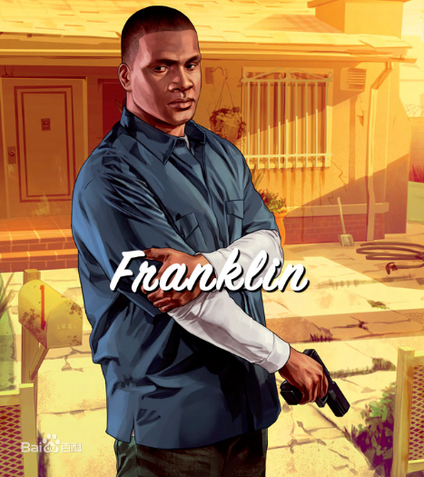
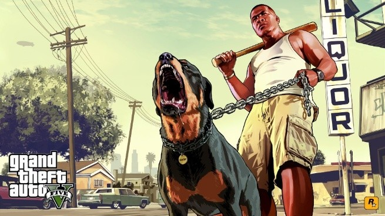
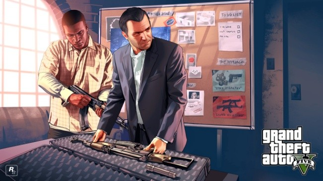
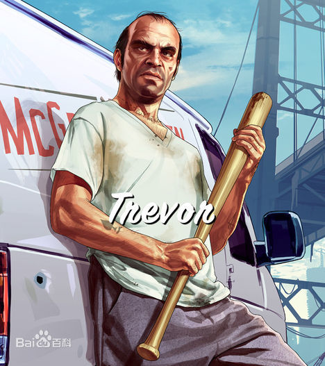
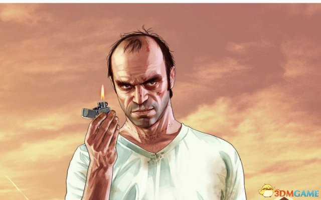
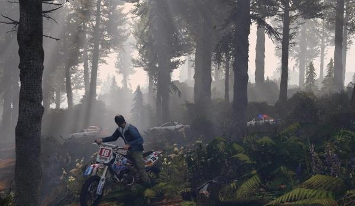

个人主页
黄施宇
介绍一款我喜欢玩的游戏

《侠盗猎车手5》（Grand Theft Auto V），是由Rockstar Games游戏公司出版发行的一款围绕犯罪为主题的开放式动作冒险游戏。游戏背景洛圣都基于现实地区中的美国洛杉矶和加州南部制作，游戏拥有几乎与现实世界相同的世界观。玩家可扮演三位主角并在任意时刻进行切换（在做某些任务和在被通缉的时候不能切换），每位主角都有自己独特的人格与故事背景，以及交织的剧情。
《侠盗猎车手5》不仅仅是一部会让你无法自拔的游戏，而且还用聪明犀利的手法讽刺了当代美国社会。在每个角度来讲都是5 年前推出的《侠盗猎车手4》的全面改良，从技术上讲《侠盗猎车手5》用一种十分便捷的方式让游戏更加完善，同时它还不拘泥于系列的原作，而是充满野心的用自己的方式来向前迈进。游戏世界中再没有其他哪个世界能够达到《侠盗猎车手5》这样的大小和规模，而且游戏背后的幽默和混乱都展示出了制作组犀利的智慧。它讲述了一个扣人心弦充满挑衅而且出人意料的故事，而最关键的是让所有这一切都发生在玩家自我的掌控之下，在洛圣都中，你可以完全按照自己的想法来展开你的冒险之旅。
主角介绍

 

麦可·迪圣塔（Michael De Santa）
在犯罪方面，麦克能迅速地在几秒内作出正确的决定，在大型抢劫的前期规划中是决定总方案的权威。麦克擅长使用枪械进行精准射击，驾驶陆地载具和飞行器，以及执行暗杀行动。但处理不好家务事，麦克的儿女们身处叛逆期，不理解父亲，导致他们之间经常发生争吵。是个有着中年危机的胖子



富兰克林·克林顿（Franklin Clinton）
富兰克林生于洛圣都南部，没有接受过教育，也没有家庭。后来想加入格罗夫帮派，但格罗夫帮并不想让富兰克林加入，于是富兰克林只能帮他们去收拾烂摊子。后来他因为偷麦可儿子的车认识了麦可。
由于他长期地为汽车销售商从事“回收”未付清分期付款买主的车辆的工作, 使得他非常擅长于偷车和驾驶陆地载具。 由于年轻力壮，他的体格健壮，但同时由于太年轻缺乏经历，在使用高级枪械射击和驾驶飞行器方面几乎没有任何经验。



崔佛·菲利普（Trevor Philips）
崔佛是一个十足的疯子，喜欢在月圆之夜学着狼嚎叫。脾气火爆，稍有不满意就会对人拳打脚踢。年轻时，发现自己在驾驶飞机方面很有天赋，崔佛是个经验老道的犯罪分子，暴躁的脾气让常人远离他的同时， 也让崔佛变得骁勇善战。由于有在空军服役的经历，崔佛擅长于驾驶飞行器和近身格斗。擅长狩猎。在潜行方面中规中矩，但由于脾气不稳定与年龄原因，他驾驶陆地载具和自身的耐力较差。
特色系统（太多，说不完）
手机上其中一个卖车的网站↓
（进游戏截的图）

经济与贸易
汽车改装
因为霓虹灯就是品味的最佳表述。 客制化方向盘、烤漆、车身零件和其他服务，让车更有自己的味道
户外环境
健行登上奇力耶德山壮阔宏伟的顶峰，或是租架飞机体验高空跳伞的刺激
购物与生活
别忘了到何酷师飞发地带和梳服发廊等绝佳的本地造型沙龙，让其中的时髦设计师为您服务
这么好玩的游戏

支持正版！
没钱怎么办
感谢观看！